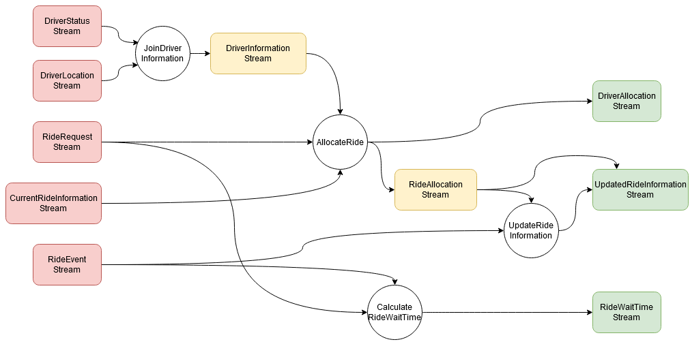

Dataflow graphs as complete causal graphs
Andrei Paleyes, Siyuan Guo, Bernhard Schölkopf, Neil Lawrence
CAIN 2023
Dataflow architecture

Data flow schemas, Dennis, J. B., Fosseen, J. B., & Linderman, J. P., International Symposium on Theoretical Programming (pp. 187-216), 1974
Causality
Causal language for dataflow
Structured causal model
(think dataflow graph)

Intervention
(think input data shift, software update, bug)

Dataflow graph = causal graph


Applications

Fault localisation

Business analysis
Open questions
- Scalability
- Costs
- Tech stack
- Ops
Intellectual debt

Intellectual Debt: With Great Power Comes Great Ignorance. Zittrain, Jonathan. 2019. Medium: Berkman Klein Center Collection